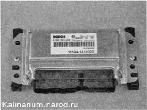
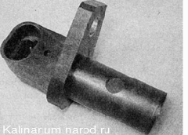

Система управления двигателем

Схема системы управления двигателем: 1 — выключатель (замок) зажигания; 2 — главное реле; 3 — аккумуляторная батарея; 4 — воздушный фильтр; 5 — колодка диагностического разъема; 6 — контрольная лампа неисправности системы управления двигателем; 7 — тахометр; 8 — спидометр; 9 — дисплей маршрутного компьютера; 10 — реле включения электровентилятора (низкая скорость); 11 — дополнительный резистор; 12 — электровентилятор системы охлаждения двигателя; 13 — реле включения электровентилятора (высокая скорость); 14 — электронный блок управления двигателем (ЭБУ); 15 — датчик температуры охлаждающей жидкости; 16 - форсунки; 17 - датчик положения распределительного вала (датчик фаз); 18 — катушка зажигания; 19 — дроссельный узел; 20 — датчик положения дроссельной заслонки; 21 — датчик массового расхода воздуха; 22 — регулятор холостого хода; 23 — свеча зажигания; 24, 32 — датчики концентрации кислорода; 25 — датчик скорости автомобиля; 26 — датчик положения коленчатого вала; 27 — датчик детонации; 28 — шкив коленчатого вала; 29 — реле топливного насоса; 30 — топливный модуль; 31 — датчик неровной дороги; 33 — клапан продувки адсорбера
Основные данные для контроля, регулировки и обслуживания
Маркировка свечи зажигания (изготовитель) |
АУ17 ДВРМ (ЗАЗС) DR15YC-1 (BRISK «SUPER») FR7DCU (BOSCH) BCPR6ES-11 (NGK) |
Резьба свечи зажигания |
М14х1,25 |
Зазор между электродами, мм |
1,0 - 1,1 |
Катушка зажигания двигателя |
2112-3705010-10 |
Форсунки двигателя |
SIEMENS VAZ 20735 |
Регулятор холостого хода |
2112-1148300-03 |
Клапан продувки адсорбера |
2112-1164200-02 |
Датчик положения коленчатого вала |
2112-3847010 (191.3847) |
Датчик положения распределительного вала |
2112-3706040 |
Датчик температуры охлаждающей жидкости (СУД) |
2112-3851010 |
Датчик положения дроссельной заслонки |
2112-1148200 |
Датчик детонации |
2112-3855020 |
Датчик массового расхода воздуха |
11184-1109010 |
Датчик концентрации кислорода |
2112-3850010-20 |
Датчик скорости автомобиля |
1118-3843010-04 |
Датчик неровной дороги |
2123-1413130-01 |
Моменты затяжки резьбовых соединений
Наименование узлов и деталей |
Момент затяжки, Н-м (кгс-м) |
Болт крепления датчика положения коленчатого вала Болт крепления датчика положения распределительного вала Болты крепления датчика массового расхода воздуха Гайка крепления датчика детонации Датчик температуры охлаждающей жидкости Датчик концентрации кислорода Свечи зажигания Винты крепления катушек зажигания |
8,0-12,0 (0,8-1,2) 8,0-12,0 (0,8-1,2) 3,0-5,0 (0,3-0,5) 10,4-24,2 (1,0-2,4) 9,3-15 (0,9-1,5) 25,0-45,0 (2,5-4,5) 30,7-39,0 (3,1-4,0) 6,0-8,0 (0,6-0,8) |
ОПИСАНИЕ СИСТЕМЫ
Система управления двигателем включает и выключает топливный насос, контролирует количество воздуха, поступающего в цилиндры двигателя, впрыскивает необходимое количество топлива во впускной трубопровод, управляет искрообразованием на свечах зажигания, корректирует угол опережения зажигания, регулирует частоту вращения коленчатого вала на холостом ходу, управляет электровентилятором системы охлаждения двигателя.
Система управления двигателем — электронная, с распределенным фазированным впрыском топлива (то есть топливо впрыскивается во впускной трубопровод каждого цилиндра в соответствии с рабочим циклом двигателя). Система состоит из следующих элементов:
• электронный блок управления;
• датчики:
1) датчик положения коленчатого вала;
2) датчик положения распределительного вала;
3) датчик положения дроссельной заслонки;
4) датчик детонации;
5) датчик температуры охлаждающей жидкости;
6) датчик массового расхода воздуха;
7) датчик скорости автомобиля;
8) два датчика концентрации кислорода;
9) датчик неровной дороги;
• исполнительные устройства:
1) главное реле;
2) реле топливного насоса;
3) форсунки;
4) катушки зажигания;
5) регулятор холостого хода;
6) реле электровентилятора системы охлаждения;
7) контрольная лампа неисправности двигателя;
8) клапан продувки адсорбера;
• соединительные провода;
• колодка диагностического разъема.
В систему управления двигателем также интегрированы:
• спидометр;
• тахометр.
Расположение элементов системы управления двигателем 11194 в моторном отсеке: 1 — датчик неровной дороги; 2 — датчик положения коленчатого вала; 3 — датчик концентрации кислорода; 4 — регулятор холостого хода и датчик положения дроссельной заслонки; 5 — датчик температуры охлаждающей жидкости (на корпусе термостата); 6 — место установки клапана продувки адсорбера; 7 — датчик массового расхода воздуха; 9 — катушка зажигания четвертого цилиндра; 10 — катушка зажигания третьего цилиндра; 11 — катушка зажигания второго цилиндра; 12 — катушка зажигания первого цилиндра; 13 — место установки датчика положения распределительного вала
Примечание. Двигатель со снятой декоративной накладкой. Топливные форсунки установлены под трубами впускного модуля.
Главный управляющий элемент системы — электронный блок управления (ЭБУ), или, как часто его называют, — контроллер с встроенным микропроцессором. По сути ЭБУ — это специализированный мини-компьютер, в котором установлена только одна программа — управление двигателем, а датчики и исполнительные устройства образуют периферийное оборудование этого компьютера. Блок получает и анализирует сигналы датчиков. На основе полученных данных блок рассчитывает управляющие команды и выдает их на исполнительные устройства. В блоке имеется три типа памяти*: постоянное запоминающее устройство (ПЗУ), оперативное запоминающее устройство (ОЗУ) и перепрограммируемое запоминающее устройство (ППЗУ).
ПЗУ — память энергонезависимая (то есть информация в памяти сохраняется при отключении питания) и представляет собой микросхему («чип»)*. В ПЗУ хранится программа вычислений и необходимые для расчета данные (параметры двигателя, передаточные отношения трансмиссии и другие характеристики). Эта информация индивидуальна для каждой модификации автомобиля.
* B конструкцию ЭБУ заводом-изготовителем могут быть внесены изменения.
Неквалифицированное перепрограммирование ПЗУ может привести к нарушениям в работе двигателя, выходу из строя элементов системы управления двигателем, повреждению двигателя.
В процессе работы ЭБУ контролирует исправность всех элементов и цепей системы управления двигателем. Обнаружив неисправность, ЭБУ переводит систему управления двигателем на резервный режим работы и включает контрольную лампу неисправности двигателя на щитке приборов. Двигатель при этом сможет продолжить работу (кроме случая неисправности датчика положения коленчатого вала, см. ниже), что позволяет доехать до места ремонта своим ходом. Коды обнаруженных неисправностей ЭБУ записывает в ОЗУ. Там же хранится оперативная информация, которую микропроцессор ЭБУ использует при расчетах. При отключении аккумуляторной батареи от бортовой сети автомобиля вся информация, хранящаяся в ОЗУ, будет удалена.
В ППЗУ хранятся коды противоугонной системы автомобиля (иммобилайзера). Этот тип памяти энергонезависим. После активации иммобилайзера ЭБУ блокирует работу системы управления двигателем при попытке запуска двигателя без специальных электронных ключей.
Электронный блок управления (ЭБУ)
ЭБУ, блок управления иммобилайзером, предохранители и реле системы управления двигателем расположены под консолью панели приборов.
Датчик положения коленчатого вала (ДПКВ) предназначен для формирования сигналов, по которым ЭБУ синхронизирует свою работу с тактами рабочего процесса двигателя. Поэтому часто этот датчик называют датчиком синхронизации. Действие датчика основано на принципе индукции — при прохождении мимо сердечника датчика зубьев шкива коленчатого вала в цепи датчика возникают импульсы напряжения переменного тока. Частота появления импульсов соответствует частоте вращения коленчатого вала. Зубья расположены по окружности шкива (через 6®). Два из них отстоят друг от друга на угловом расстоянии 18°. Сделано это для формирования в цепи датчика опорных сигналов — своеобразных точек отсчета, относительно которых ЭБУ определяет положение коленчатого вала - верхние мертвые точки в первом/четвертом и втором/третьем цилиндрах. Работа двигателя с неисправным датчиком положения коленчатого вала невозможна. Датчик положения коленчатого вала ремонту не подлежит — в случае неисправности он заменяется в сборе.

Датчик положения коленчатого вала
Датчик положения распределительного вала (ДПРВ) предназначен для формирования сигнала, по которому ЭБУ определяет верхнюю мертвую точку (ВМТ) поршня первого цилиндра при такте сжатия. Иногда этот датчик называют датчиком фаз. Принцип действия датчика основан на эффекте Холла. Когда через прорезь в торце датчика проходит выступ кольца, закрепленного на шкиве распределительного вала впускных клапанов, датчик подает на ЭБУ электрический сигнал. При неисправности ДПРВ электронный блок управления переводит систему на резервный режим работы.
Датчик положения распределительного вала — это электронный прибор, который не подлежит ремонту. В случае неисправности датчика его следует заменить.
Датчик положения распределительного вала
ДПРВ установлен в задней защитной крышке ремня ГРМ
Датчик детонации (ДД) — пьезоэлектрический, реагирует на вибрацию двигателя. По сигналам датчика ЭБУ определяет момент возникновения детонации при работе двигателя и в соответствии с этим корректирует угол опережения зажигания. При неисправности ДД электронный блок управления переводит систему на резервный режим работы.
Датчик детонации
Датчик детонации установлен на передней стенке блока цилиндров
Датчик массового расхода воздуха (ДМРВ) пленочного типа, установлен между воздушным фильтром и дроссельной заслонкой. По сигналу датчика ЭБУ рассчитывает количество воздуха, поступающего в цилиндры двигателя. При неисправности ДМРВ электронный блок управления переводит систему на резервный режим работы.
Датчик массового расхода воздуха
Датчик положения дроссельной заслонки (ДПДЗ) установлен на корпусе дроссельной заслонки, и связан с осью дроссельной заслонки. ДПДЗ представляет собой переменный резистор, сопротивление которого зависит от угла положения дроссельной заслонки. По сигналу ДПДЗ электронный блок управления определяет величину открытия дроссельной заслонки. При неисправности ДПДЗ электронный блок управления переводит систему на резервный режим работы.
Датчик положения дроссельной заслонки
Регулятор холостого хода (РХХ) — это запорный клапан с приводом от шагового электродвигателя. РХХ установлен на корпусе дроссельной заслонки. ЭБУ, подавая управляемый сигнал на РХХ, регулирует частоту врашения коленчатого вала двигателя на холостом ходу, при запуске и прогреве двигателя.
Регулятор холостого хода
Датчик концентрации кислорода подает выходной сигнал, по которому ЭБУ определяет концентрацию кислорода в отработавших газах. По полученным данным ЭБУ корректирует количество топлива, впрыскиваемого в цилиндры двигателя, тем самым поддерживая оптимальную пропорцию смеси воздуха с топливом (это необходимо для эффективной работы каталитического нейтрализатора). Чувствительный элемент датчика концентрации кислорода расположен в потоке отработавших газов (перед каталитическим нейтрализатором). Работоспособность датчика возможна только при нагреве его чувствительного элемента до температуры не ниже 300 С. Для сокращения времени прогрева в датчик встроен нагревательный элемент.
Датчик концентрации кислорода: 1 — соединительная колодка; 2 — жгут проводов; 3 — уплотнительное кольцо: 4 — чувствительный элемент с отверстиями для подвода отработавших газов
На автомобилях, удовлетворяющих требованиям норм токсичности ЕВРО ИТ, в систему выпуска отработавших газов после нейтрализатора встроен второй датчик концентрации кислорода.
Наличие в отработавших газах соединений свинца и кремния может привести к выходу из строя датчика концентрации кислорода. Поэтому не допускается использование этилированного бензина. При ремонте двигателя нельзя применять герметик с большим содержанием силикона (соединения кремния), пары которого могут попасть через систему вентиляции картера в цилиндры и далее в выпускной тракт. Следует использовать герметик, на упаковке которого указано, что он безопасен для датчика концентрации кислорода.
Датчик температуры охлаждающей жидкости (ДТОЖ) — полупроводниковый прибор термистор, электрическое сопротивление которого меняется при изменении температуры окружающей среды. ДТОЖ установлен в корпусе термостата. По сопротивлению датчика ЭБУ оценивает тепловой режим двигателя. Полученные данные используются при расчете большинства управляющих команд для элементов системы управления двигателем, а также для включения электровентилятора системы охлаждения двигателя. При неисправности ДТОЖ электронный блок управления переводит систему на резервный режим работы.
Датчик температуры охлаждающей жидкости с медным уплотнительным кольцом
Датчик скорости автомобиля установлен на коробке передач. Принцип действия датчика основан на эффекте Холла. По импульсам, вырабатываемым датчиком, ЭБУ рассчитывает скорость автомобиля. Сигнал с датчика поступает также на спидометр.
Датчик скорости автомобиля
Чтобы ЭБУ не обнаруживал ложные неисправности в работе зажигания, вызванные резкими толчками силового агрегата придвижении автомобиля по неровностям, в систему встроен датчик неровной дороги (ДПД).
На двигателе используются четыре катушки зажигания .Они установлены непосредственно на свечах зажигания. Это исключает снижение мощности искры из-за угечек тока (такое возможно при повреждении изоляции высоковольтных проводов).
Катушка зажигания двигателя 11194: 1 — выводы для подсоединения колодки жгута проводов; 2 — проушина для крепления катушки; 3 — резиновое уплотнительное кольцо; 4— наконечник для соединения со свечой зажигания
На двигателях применяются свечи зажигания АУ17ДВРМ, где:
А - резьба М14x1,25;
Свеча зажигания: 1 — боковой электрод: 2 — центральный электрод (в тепловом конусе изолятора); 3 — резьбовая часть корпуса; 4 — уплотнительное кольцо; 5 — шестигранная часть корпуса под ключ; 6 — изолятор (на нем нанесена маркировка свечи зажигания); 7 — контактный наконечник (съемный, установлен на резьбе)
у — шестигранная часть корпуса под ключ на 16 мм;
17 — калильное число;
Д — длина резьбовойчасти 19 мм, с плоской посадочной поверхностью;
В — выступание теплового конуса изолятора за тореп резьбовой части корпуса;
Р — встроенный резистор;
М — биметаллический центральный электрод.
На двигатель можно установить свечи различных производителей аналогичного типа (см. табл. 8.4.1 ).
Форсунка — это электромагнитный игольчатый клапан, на выходном патрубке которого выполнен распылитель с четырьмя калиброванными отверстиями. Форсунка открывается по сигналу ЭБУ, при этом топливо под давлением впрыскивается непосредственно на впускной клапан. Количество топлива, поступающего в цилиндр, регулируется временем открытия форсунки. На двигателе установлено по одной форсунке на каждый цилиндр.
Форсунка двигателя: 1 — распылитель; 2 — уплотнительное резиновое кольцо; 3 — выводы для подсоединения жгута проводов
Клапан продувки адсорбера установлен на корпусе воздушного фильтра (подробнее см. «Система питания»).
Колодка диагностического разъема предназначена для подключения внешнего диагностического устройства (например, ДСТ-2М) к системе управления двигателем. Колодка установлена в облицовке туннеля пола.
Расположение колодки диагностического разъема